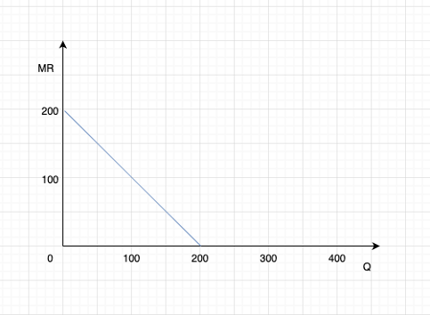

《管理经济学》ZF25082 班第 1 次作业
说明：每人提交一份作业（电子版，命名规则：学号-姓名-第 1 次作业），可以互相讨论，但要独立写作业。10 月 24 日前提交至邮箱 qinz@vip.163.com
1. 如果某一特定市场中出现如下情况，那么对产品均衡价格和销售量将会产生怎样的影响？
① 商品为正常商品，消费者的收入上升；
需求曲线右移，均衡价格提高，销售量上升
② 某种消费的替代品价格上升；
需求曲线左移，均衡价格降低，销售量下降
③ 某种消费的互补品价格上升；
需求曲线左移，均衡价格降低，销售量下降
④ 某种主要原材料的价格上升；
供给曲线左移，均衡价格上升，销售量下降
⑤ 社会上正在广泛宣传，使用此种商品将会对健康造成危害；
需求曲线左移，均衡价格降低，销售量下降
⑥ 在这行业中，某种可以降低此类产品生产成本的新技术被开发出来。
供给曲线右移，均衡价格降低，销售量上升
2. 假设在第 1 题中的情况有两种同时发生。根据下面给出的每对情形，试通过定性分析，预测均衡时产品价格或交易量的变化方向。并解释为什么两个变量中有一个是不确定的。
（1）①和⑥同时发生；
① 需求曲线右移 ⑥ 供给曲线右移 ，均衡价格不确定，销售量上升。 需求拉高价格，供给压低价格，二者方向相反；哪一方效应更强决定价格最终是上升还是下降或不变
（2）③和④同时发生；
③ 需求曲线左移 ④ 供给曲线左移 ，均衡价格不确定，销售量下降。需求减少压低价格，供给减少推高价格；最终价格由两者相对强度决定
（3）③和⑥同时发生；
③ 需求曲线左移 ⑥ 供给曲线右移 ，均衡价格下降，销售量不确定。需求左移使数量下降，供给右移使数量上升，两个方向相反；最终数量由二者强度决定
3. 某产品的需求曲线为：，供给曲线为： ( , 的单位为个，P 的单位为元/个)。问：
（1）达到均衡时，产品的价格与销售量是多少？
达到均衡时：
（2）供给曲线不变，如果需求曲线变为 ，产品的均衡价格与均衡销售量是多少？
（3）需求曲线不变，如果供给曲线变为 ，产品的均衡价格与均衡销售量是多少？
4. 某企业生产和销售一种按摩器，它的需求曲线方程是：Q=400-2P。式中，Q 为日销售量（台），P 为价格（元）。
（1）假定该企业计划每日销售按摩器 180 台，价格应是多少？
（2）画出按摩器的需求曲线、边际收入曲线、总收入曲线；
需求曲线
总收入曲线
边际收入曲线

（3）求出按摩器价格 P=12 元时的点价格弹性。
5.某产品的需求函数为：P=20-2Q。试：
（1）写出该产品的总收入、平均收入和边际收入的表达式；
总收入函数：
平均收入函数：
边际收入函数:
（2）平均收入与价格是什么关系？
,平均收入等于单价
（3）平均收入曲线的斜率与边际收入曲线的斜率之间有什么关系？
平均收入曲线：AR=20−2Q，斜率 = −2
边际收入曲线：MR=20−4Q，斜率 = −4
边际收入曲线的斜率是平均收入曲线斜率的 2 倍（更陡）
6. 对于柯布—道格拉斯生产函数
（1）当厂商投入 25 单位资本，10000 单位劳动时，资本的边际产量是多少？
已知生产函数：
其中
- ：资本投入
- ：劳动投入
资本的边际产量定义为：
对 求偏导：
代入 ：
代入计算：
（2）当厂商投入 25 单位资本，10000 单位劳动时，资本的平均产量是多少？
资本的平均产量定义为：
计算产出 ：
代入 ：
7. 某生产过程中劳动力的边际产量为，资本量是固定的，为 64 单位，工资为每人 10 元，产品售价为每件 5 元。请找出最优的人工投入量。
已知生产过程中劳动力的边际产量为：
资本量固定为：
工资为：
产品售价为：
在利润最大化时，满足劳动的边际收益产品等于工资：
代入 ：
化简：
代入 并求解
两边同时除以 10：
平方两边：
8. 某年春节期间，草莓的价格由原来的每斤 35-40 元上升到每斤 50-70 元，而春节过后草莓的价格一路下跌到每斤 20-30 元。草莓的价格高开低走，年前年后大变样，究其原因，离不开两点：其一是“物以稀为贵”，年前草莓属于刚上市期，品种少、产量少，加之国际物流费用的水涨船高，这些水果的身价难免升高；其二是“特殊节日”，春节作为中国人最重要的节日之一，期间需拜访亲戚、招待亲朋好友，草莓等水果肯定少不了，年前价格高实属正常。而到了年后，气温逐渐升温，草莓产量增多，大甩卖、价格斩腰也正常不过。
（1）草莓的价格为什么会在春节期间上涨？请画图说明。

春节期间草莓价格上升，是因为 需求增加 + 供给偏少。
- 供给端（S）减少 / 上升成本
- 草莓刚上市，产量少；
- 天气寒冷，运输成本、物流费用高；
- 因此供给曲线 左移（S₁ → S₂）。
- 需求端（D）增加
- 春节送礼、待客、消费旺季，草莓需求量大增；
- 因此需求曲线 右移（D₁ → D₂）。
两方面叠加 → 均衡价格显著上升，销量略升或保持稳定。
（2）草莓的价格为什么在春节过后一路下跌？请画图说明。
春节后草莓价格下降，是因为 供给大幅增加 + 需求减少。
- 供给端（S）增加
- 气温上升，草莓大量上市；
- 运输成本下降；
- 因此供给曲线 右移（S₁ → S₂）。
- 需求端（D）减少
- 节日过后，消费者需求回落；
- 因此需求曲线 左移（D₁ → D₂）。
两方面叠加 → 均衡价格显著下降。